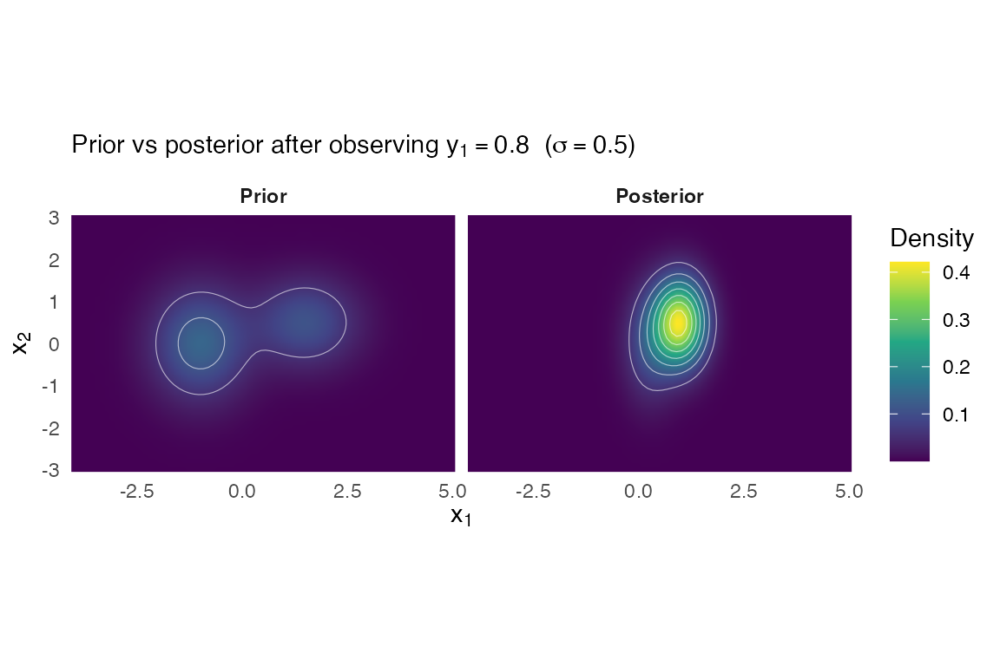
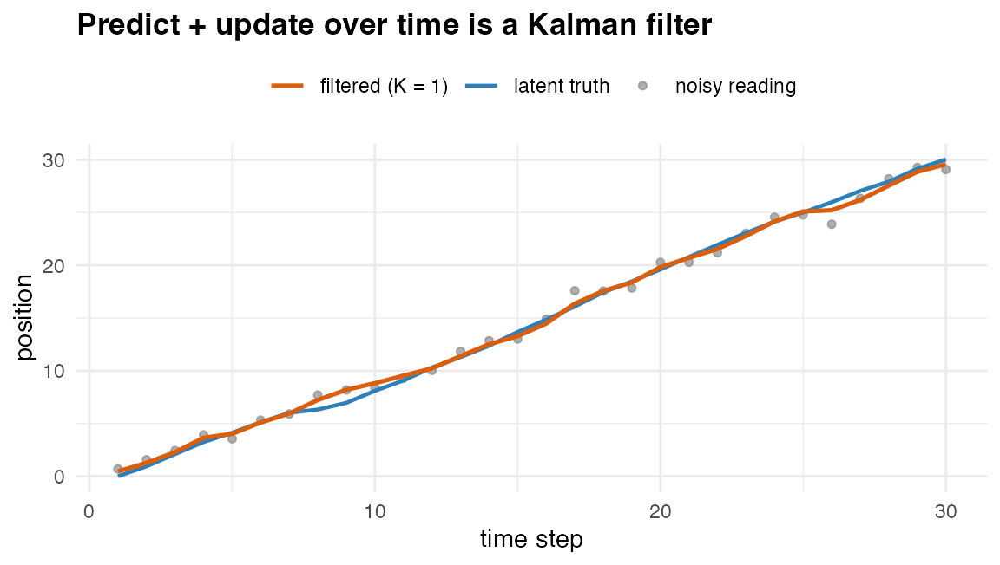
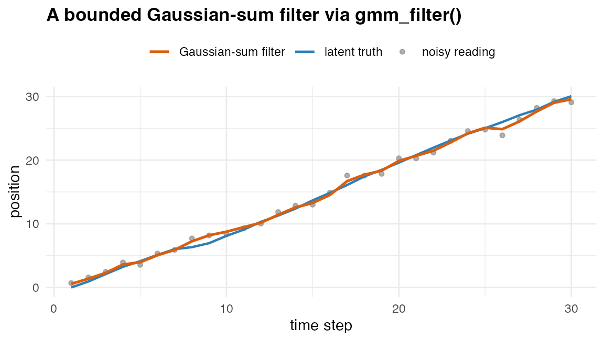

Affine-Gaussian operator calculus on a Gaussian mixture
Source:vignettes/operator_calculus.Rmd
operator_calculus.RmdWhy an operator calculus
A fitted Gaussian-mixture proxy supports four kinds of downstream operations in closed form:
-
Pushforward through a linear sensor or aggregation
operator (
gmm_affine,gmm_aggregate). -
Bayesian update on a noisy linear observation
(
gmm_observe– the finite-mixture analogue of a Kalman update). -
Marginalisation over a coordinate subset
(
gmm_marginalise, shipped since v0.1). -
Conditioning on fully observed coordinates
(
gmm_conditionalise,gmm_missing).
Each operator returns a gmm, so the operators compose
freely without ever leaving closed form. This is the algebraic dividend
of having fitted a parametric proxy in the first place – a
non-parametric KDE or a Monte Carlo sample bank cannot do this.
A worked example
Start with a 2D mixture proxy of a pair of latent variables.
g_prior <- gmm(
weights = c(0.6, 0.4),
means = list(c(-1, 0), c(1.5, 0.5)),
covariances = list(diag(c(0.6, 0.8)), diag(c(0.7, 0.5)))
)
g_prior
#> <gmm>: K = 2 components in p = 2 dimensions
#> [1] w = 0.6000, |mu| = 1.0000, tr(Sigma) = 1.4000
#> [2] w = 0.4000, |mu| = 1.5811, tr(Sigma) = 1.2000Pushforward through a linear sensor
Suppose we observe with and sensor matrix
gmm_affine() returns the pushed-forward mixture in
R^3.
g_pushed <- gmm_affine(g_prior, A, b, noise_cov = R)
g_pushed
#> <affine(gmm)>: K = 2 components in p = 3 dimensions
#> [1] w = 0.6000, |mu| = 1.4142, tr(Sigma) = 2.9500
#> [2] w = 0.4000, |mu| = 2.5495, tr(Sigma) = 2.5500The weights are unchanged; the means are and the covariances are . The output is a closed-form mixture in the sensor space.
Bayesian update on a noisy linear observation
Suppose now that we observe y = 0.8 on the
first coordinate of x alone, with noise variance
R = 0.25.
A_obs <- matrix(c(1, 0), nrow = 1L)
g_post <- gmm_observe(g_prior, A = A_obs, y = 0.8,
noise_cov = matrix(0.25, 1L, 1L))
g_post
#> <observe(gmm)>: K = 2 components in p = 2 dimensions
#> [1] w = 0.2338, |mu| = 0.2706, tr(Sigma) = 0.9765
#> [2] w = 0.7662, |mu| = 1.1039, tr(Sigma) = 0.6842Component weights have been multiplied by the marginal evidence and renormalised. Component means and covariances have been Kalman-updated component-wise.
Visualise the prior and the posterior on a planar grid:
grid <- expand.grid(x = seq(-4, 5, length.out = 80L),
y = seq(-3, 3, length.out = 60L))
gm <- as.matrix(grid)
prior_df <- data.frame(x = grid$x, y = grid$y,
d = dgmm(gm, g_prior), part = "prior")
post_df <- data.frame(x = grid$x, y = grid$y,
d = dgmm(gm, g_post), part = "posterior")
long <- rbind(prior_df, post_df)
long$part <- factor(long$part, levels = c("prior", "posterior"),
labels = c("Prior", "Posterior"))
ggplot(long, aes(x, y)) +
geom_raster(aes(fill = d), interpolate = TRUE) +
geom_contour(aes(z = d), colour = "white", linewidth = 0.2, alpha = 0.6,
bins = 8L) +
facet_wrap(~ part) +
coord_equal(expand = FALSE) +
scale_fill_viridis_c(name = "Density") +
labs(title = expression(paste("Prior vs posterior after observing ",
y[1] == 0.8, " (", sigma == 0.5, ")")),
x = expression(x[1]), y = expression(x[2])) +
theme_minimal(base_size = 11) +
theme(plot.title = element_text(face = "bold", size = rel(1)),
strip.text = element_text(face = "bold"),
panel.grid = element_blank(),
legend.position = "right")
Kalman parity check
For a single-component prior, gmm_observe() collapses
exactly to a Kalman update. Verify:
g_single <- gmm(
weights = 1,
means = list(c(0, 0)),
covariances = list(diag(c(1, 2)))
)
g_one_obs <- gmm_observe(
g_single,
A = matrix(c(1, 0), nrow = 1L),
y = 0.5,
noise_cov = matrix(0.5, 1L, 1L)
)
## Hand Kalman:
S <- diag(c(1, 2))
H <- matrix(c(1, 0), nrow = 1L)
R_obs <- matrix(0.5, 1L, 1L)
Sx <- H %*% S %*% t(H) + R_obs
gain <- S %*% t(H) %*% solve(Sx)
mu_hat <- as.numeric(gain * 0.5)
S_hat <- S - gain %*% H %*% S
list(
mu_diff_max = max(abs(mu_hat - g_one_obs@means[[1L]])),
cov_diff_max = max(abs(S_hat - g_one_obs@covariances[[1L]]))
)
#> $mu_diff_max
#> [1] 1.110223e-16
#>
#> $cov_diff_max
#> [1] 1e-06The differences are at the level of the numerical-hygiene ridge (1e-6), so the operator is exact up to numerical tolerance.
Aggregation through a coarsening matrix
Aggregating a fine-grained latent (3 components) into a coarser one
(sum of the first two coordinates) is a special case of
gmm_affine with a row-sum A.
g_fine <- gmm(
weights = c(0.3, 0.4, 0.3),
means = list(c(0, 0, 0), c(2, 1, -1), c(-1, -1, 2)),
covariances = list(diag(3), diag(3), diag(3))
)
A_agg <- matrix(c(1, 1, 0,
0, 0, 1), nrow = 2L, byrow = TRUE)
gmm_aggregate(g_fine, A_agg)
#> <aggregate(gmm)>: K = 3 components in p = 2 dimensions
#> [1] w = 0.3000, |mu| = 0.0000, tr(Sigma) = 3.0000
#> [2] w = 0.4000, |mu| = 3.1623, tr(Sigma) = 3.0000
#> [3] w = 0.3000, |mu| = 2.8284, tr(Sigma) = 3.0000The aggregated mixture has the same number of components and weights
as the fine one, but with mu and Sigma mapped
through A.
Missing-data conditioning
If a subset of coordinates is exactly observed (no noise),
gmm_missing() routes through the Schur-complement path:
gmm_missing(g_prior, observed = 2L, values = 0.5)
#> <missing(gmm)>: K = 2 components in p = 1 dimensions
#> [1] w = 0.5036, |mu| = 1.0000, tr(Sigma) = 0.6000
#> [2] w = 0.4964, |mu| = 1.5000, tr(Sigma) = 0.7000This is equivalent to
gmm_conditionalise(g_prior, given = c(NA, 0.5)) but with a
clearer index-based signature for missing-data pipelines.
Filtering over time – the Kalman filter as a special case
The Bayesian update above is a single step. A filter
alternates two steps over time: a predict step that
pushes the state forward through the dynamics (gmm_affine,
the Chapman–Kolmogorov propagation of a linear stochastic dynamical
system), and an update step that folds in each noisy
measurement (gmm_observe). Run on a single-component prior,
this recursion is the classical discrete-time Kalman filter;
run on a multi-component prior, it is the Gaussian-sum
filter – a bank of Kalman filters carried in parallel.
Take a one-dimensional constant-velocity track, with state , linear dynamics , process noise , and a noisy position sensor with noise .
dt <- 1
A <- matrix(c(1, dt, 0, 1), 2L, 2L, byrow = TRUE) # constant velocity
C <- matrix(c(1, 0), 1L, 2L) # observe position only
Q <- 0.01 * diag(2) # process noise
R <- matrix(0.5, 1L, 1L) # sensor noise
set.seed(42)
n <- 30L
truth <- matrix(0, n, 2L)
truth[1L, ] <- c(0, 1)
for (k in 2:n) {
truth[k, ] <- as.numeric(A %*% truth[k - 1L, ]) + mvnfast::rmvn(1L, c(0, 0), Q)
}
y <- truth[, 1L] + rnorm(n, 0, sqrt(R[1L, 1L])) # noisy position readingsThe filter is the operator calculus in a loop –
gmm_affine() to predict, gmm_observe() to
update:
g <- gmm(weights = 1, means = list(c(0, 0)), covariances = list(diag(2)))
filtered <- numeric(n)
for (k in seq_len(n)) {
if (k > 1L) g <- gmm_affine(g, A = A, b = c(0, 0), noise_cov = Q) # predict
g <- gmm_observe(g, A = C, y = y[k], noise_cov = R) # update
filtered[k] <- g@means[[1L]][1L]
}Against a hand-coded textbook Kalman filter the two tracks agree to the level of the numerical-hygiene ridge:
mu <- c(0, 0); S <- diag(2); kf <- numeric(n)
for (k in seq_len(n)) {
if (k > 1L) { mu <- as.numeric(A %*% mu); S <- A %*% S %*% t(A) + Q } # predict
K <- S %*% t(C) %*% solve(C %*% S %*% t(C) + R) # gain
mu <- mu + as.numeric(K %*% (y[k] - C %*% mu))
S <- (diag(2) - K %*% C) %*% S
kf[k] <- mu[1L]
}
c(max_abs_diff = max(abs(filtered - kf)))
#> max_abs_diff
#> 4.803363e-05
track <- data.frame(t = seq_len(n), truth = truth[, 1L], y = y,
filtered = filtered)
ggplot(track, aes(t)) +
geom_point(aes(y = y, colour = "noisy reading"), size = 1.3, alpha = 0.7) +
geom_line(aes(y = truth, colour = "latent truth"), linewidth = 0.8) +
geom_line(aes(y = filtered, colour = "filtered (K = 1)"), linewidth = 0.9) +
scale_colour_manual(name = NULL,
values = c("noisy reading" = "grey55",
"latent truth" = "#2C7FB8",
"filtered (K = 1)" = "#D95F0E")) +
labs(title = "Predict + update over time is a Kalman filter",
x = "time step", y = "position") +
theme_minimal(base_size = 11) +
theme(legend.position = "top", plot.title = element_text(face = "bold"))
A constant-velocity track filtered by the K = 1 operator-calculus recursion (the Kalman filter): noisy readings, the latent truth, and the filtered estimate.
The mixture generalisation. At
the same two calls run a Kalman filter inside every component
and reweight the components by their evidence – the Gaussian-sum filter.
It represents beliefs a single Kalman filter cannot (multimodal
posteriors: several competing hypotheses about where the target is), at
the cost that each gmm_observe (under a Gaussian-mixture
noise or dynamics model) can multiply the component count. Collapsing
the mixture back to a fixed budget keeps the filter bounded; that
collapse is gmm_reduce(), next.
Bounding the filter – mixture reduction
gmm_reduce() collapses a mixture to a budget of at most
k_max components by a greedy, moment-preserving pairwise
merge: at each step the cheapest pair is replaced by the single Gaussian
that preserves their combined weight, mean and covariance. Two merge
costs decide which pair goes first – the Kullback–Leibler bound of
Runnalls (2007), cost = "kl", and a closed-form
Cauchy–Schwarz cost, cost = "cs", built from the same
Gaussian-product identity as gmm_divergence().
Take a six-component mixture that really has three clusters, each split into two near-identical components, and reduce it to three:
g6 <- gmm(
weights = rep(1 / 6, 6),
means = list(c(-5, 0), c(-5, 0.15), c(5, 0), c(5.1, -0.1),
c(0, 6), c(0.1, 6.1)),
covariances = rep(list(0.5 * diag(2)), 6)
)
g3 <- gmm_reduce(g6, k_max = 3L)
gmm_n_components(g3)
#> [1] 3Because every merge is moment-preserving, the reduction leaves the mixture’s global mean and covariance untouched – and merging near-duplicates barely moves the mixture, so the divergence from the original is negligible:
mix_mean <- function(g) Reduce(`+`, Map(`*`, g@weights, g@means))
c(mean_shift = max(abs(mix_mean(g6) - mix_mean(g3))),
divergence = gmm_divergence(g6, g3, type = "cs"))
#> mean_shift divergence
#> 0.000000e+00 2.464851e-10Reducing all the way to a single component returns the moment-matched
Gaussian, so gmm_reduce() interpolates between the full
mixture and its single-Gaussian summary. For a smooth,
over-parameterised mixture a globally fitted proxy can beat any sequence
of pairwise merges; method = "anneal" refits a budget-sized
proxy by annealed EM and keeps it when it improves on the merge. In a
Gaussian-sum filter, reduction runs after each update, holding the
component count at the budget.
A bounded filter in one call – gmm_filter()
The predict / update / reduce loop is packaged as a single verb.
gmm_filter() takes the prior belief, the linear-Gaussian
dynamics and measurement, the observation
series y, and an optional component cap k_max.
With Gaussian noise and k_max = NULL it is the Kalman
filter; with a Gaussian-sum process or measurement noise – a
gmm in place of a covariance matrix – it is the
Gaussian-sum filter, bounded by gmm_reduce() after each
step.
On the constant-velocity track above, the verb reproduces the explicit Kalman recursion to machine precision (using the same predict-then-update convention):
prior <- gmm(weights = 1, means = list(c(0, 0)), covariances = list(diag(2)))
out <- gmm_filter(prior,
dynamics = list(A = A, Q = Q),
measurement = list(C = C, R = R),
y = y, ridge_eps = 0)
mu <- c(0, 0); P <- diag(2); kf2 <- numeric(n)
for (k in seq_len(n)) {
mu <- as.numeric(A %*% mu); P <- A %*% P %*% t(A) + Q # predict
G <- P %*% t(C) %*% solve(C %*% P %*% t(C) + R) # gain
mu <- mu + as.numeric(G %*% (y[k] - C %*% mu)) # update
P <- (diag(2) - G %*% C) %*% P
kf2[k] <- mu[1L]
}
c(max_abs_diff = max(abs(out$mean[, 1L] - kf2)))
#> max_abs_diff
#> 3.552714e-15A heavy-tailed disturbance is awkward for a single Gaussian process noise. Modelled as a two-component Gaussian sum – a calm regime and an occasional larger jump – the recursion becomes a genuine Gaussian-sum filter. Each step multiplies the component count by two, so the cap returns it to budget:
q_heavy <- gmm(weights = c(0.9, 0.1),
means = list(c(0, 0), c(0, 0)),
covariances = list(0.01 * diag(2), 0.5 * diag(2)))
gsf <- gmm_filter(prior,
dynamics = list(A = A, Q = q_heavy),
measurement = list(C = C, R = R),
y = y, k_max = 6L)
c(max_components = max(gsf$summary$n_components), steps = nrow(gsf$summary))
#> max_components steps
#> 6 30The component count is held at the cap across the whole series. The
$summary data frame records the filtered mean, standard
deviation and component count at each step, and $filtered
holds the full filtered mixture per step for any downstream closed-form
query.
gsf_track <- data.frame(t = seq_len(n), truth = truth[, 1L], y = y,
filtered = gsf$mean[, 1L])
ggplot(gsf_track, aes(t)) +
geom_point(aes(y = y, colour = "noisy reading"), size = 1.3, alpha = 0.7) +
geom_line(aes(y = truth, colour = "latent truth"), linewidth = 0.8) +
geom_line(aes(y = filtered, colour = "Gaussian-sum filter"), linewidth = 0.9) +
scale_colour_manual(name = NULL,
values = c("noisy reading" = "grey55",
"latent truth" = "#2C7FB8",
"Gaussian-sum filter" = "#D95F0E")) +
labs(title = "A bounded Gaussian-sum filter via gmm_filter()",
x = "time step", y = "position") +
theme_minimal(base_size = 11) +
theme(legend.position = "top", plot.title = element_text(face = "bold"))
The same track filtered by the Gaussian-sum filter with a two-component heavy-tailed process noise, capped at six components per step. The filtered mean tracks the latent truth while the component count stays bounded.
Composition rules
The operators commute exactly with gmm_marginalise()
when applied to disjoint coordinate subsets, and they associate under
sequential observation:
## Two sequential observations on disjoint coordinates
g_a <- gmm_observe(g_prior, A = matrix(c(1, 0), nrow = 1L),
y = 0.5, noise_cov = matrix(0.25, 1, 1))
g_ab <- gmm_observe(g_a, A = matrix(c(0, 1), nrow = 1L),
y = 0.2, noise_cov = matrix(0.25, 1, 1))
## Equivalent: one observation on the stacked coordinates
g_stack <- gmm_observe(
g_prior,
A = diag(2),
y = c(0.5, 0.2),
noise_cov = 0.25 * diag(2)
)
list(
weights_diff = max(abs(g_ab@weights - g_stack@weights)),
mu1_diff = max(abs(g_ab@means[[1L]] - g_stack@means[[1L]])),
cov1_diff = max(abs(g_ab@covariances[[1L]] - g_stack@covariances[[1L]]))
)
#> $weights_diff
#> [1] 3.048779e-08
#>
#> $mu1_diff
#> [1] 4.535143e-08
#>
#> $cov1_diff
#> [1] 1e-06The disagreement is at the ridge level – the two routes coincide.
When to not use the operator calculus
-
Non-linear channels. The closed-form maths uses
linearity of
Aand Gaussianity of the noise. A non-linear sensor (e.g. a Sigmoid observation, a max-pooling aggregator) is not closed form and must not be silently approximated; use a Monte Carlo pushforward instead. - Non-Gaussian observation noise. Same restriction.
-
Hierarchical / random-effect models. The operator
calculus applies to a fixed affine-Gaussian channel; a
mixture-of-channels prior on
(A, R)requires additional integration that is not closed form in general.
Comparison to a Gaussian-process latent
For a downscaling problem :
- A Gaussian-process latent for
f(x)gives a fully non-parametric, uncertainty-rich representation, and integration through a linear operator with additive Gaussian noise is closed form for a GP too. What it lacks is the cheap composition: repeatedly conditioning, aggregating, and re-mixing GP posteriors across configurations carries a growing kernel-algebra burden, where the mixture calculus stays a finite parameter list. - A finite Gaussian-mixture latent (what
proxymixships) is less flexible but admits the full operator calculus on this page. The trade-off is bias against algebraic tractability. The choice depends on how much closed-form composition the downstream pipeline needs.
References
- Hoek, J. van der and Elliott, R. J. (2024). Mixtures of multivariate Gaussians. Stochastic Analysis and Applications. doi:10.1080/07362994.2024.2372605.
- Kalman, R. E. (1960). A new approach to linear filtering and prediction problems. Transactions of the ASME – J. Basic Engineering.
- Alspach, D. L. and Sorenson, H. W. (1972). Nonlinear Bayesian estimation using Gaussian sum approximations. IEEE Transactions on Automatic Control 17(4), 439–448.
- Runnalls, A. R. (2007). Kullback–Leibler approach to Gaussian mixture reduction. IEEE Transactions on Aerospace and Electronic Systems 43(3), 989–999.
- Murphy, K. P. (2012). Machine Learning: A Probabilistic Perspective. MIT Press. Ch. 4 (Gaussian models), Ch. 18 (state-space).